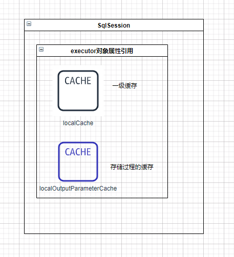

Mybatis执行流程 一级缓存： 一级缓存最大的共享范围就是一个SqlSession内部

二级缓存： 多个 SqlSession 需要共享缓存 ，则需要开启二级缓存，开启二级缓存后，会使用 CachingExecutor 装饰 Executor，进入一级缓存的查询流程前，先在CachingExecutor 进行二级缓存的查询。
CachingExecutor
org.apache.ibatis.executor.CachingExecutor#query(org.apache.ibatis.mapping.MappedStatement, java.lang.Object, org.apache.ibatis.session.RowBounds, org.apache.ibatis.session.ResultHandler, org.apache.ibatis.cache.CacheKey, org.apache.ibatis.mapping.BoundSql)
1 2 3 4 5 6 7 8 9 10 11 12 13 14 15 16 17 18 19 20 21 22 23 24 25 26 27 28 29 @Override public <E> List<E> query (MappedStatement ms, Object parameterObject, RowBounds rowBounds, ResultHandler resultHandler, CacheKey key, BoundSql boundSql) throws SQLException { Cache cache = ms.getCache(); if (cache != null ) { flushCacheIfRequired(ms); if (ms.isUseCache() && resultHandler == null ) { ensureNoOutParams(ms, boundSql); @SuppressWarnings("unchecked") List<E> list = (List<E>) tcm.getObject(cache, key); if (list == null ) { list = delegate.query(ms, parameterObject, rowBounds, resultHandler, key, boundSql); tcm.putObject(cache, key, list); } return list; } } return delegate.query(ms, parameterObject, rowBounds, resultHandler, key, boundSql); }
1. sqlSessionFactory.openSession(); org/apache/ibatis/session/defaults/DefaultSqlSessionFactory#openSession()
1 2 3 4 5 6 @Override public SqlSession openSession () { return openSessionFromDataSource(configuration.getDefaultExecutorType(), null , false ); }
1.1 openSessionFromDataSource() DefaultSqlSessionFactory#openSessionFromDataSource(ExecutorType execType, TransactionIsolationLevel level, boolean autoCommit);
1 2 3 4 5 6 7 8 9 10 11 12 13 14 15 16 17 18 19 20 21 private SqlSession openSessionFromDataSource (ExecutorType execType, TransactionIsolationLevel level, boolean autoCommit) { Transaction tx = null ; try { final Environment environment = configuration.getEnvironment(); final TransactionFactory transactionFactory = getTransactionFactoryFromEnvironment(environment); tx = transactionFactory.newTransaction(environment.getDataSource(), level, autoCommit); final Executor executor = configuration.newExecutor(tx, execType); return new DefaultSqlSession (configuration, executor, autoCommit); } catch (Exception e) { closeTransaction(tx); throw ExceptionFactory.wrapException("Error opening session. Cause: " + e, e); } finally { ErrorContext.instance().reset(); } }
Environment
1 2 3 4 5 6 public final class Environment { private final String id; private final TransactionFactory transactionFactory; private final DataSource dataSource; ... }
1 2 3 4 5 6 7 8 9 10 11 <environments default ="development" > <environment id ="development" > <transactionManager type ="JDBC" /> <dataSource type ="POOLED" > <property name ="driver" value ="${driver}" /> <property name ="url" value ="${url}" /> <property name ="username" value ="${username}" /> <property name ="password" value ="${password}" /> </dataSource > </environment > </environments >
1.1.1 getTransactionFactoryFromEnvironment() org.apache.ibatis.session.defaults.DefaultSqlSessionFactory#getTransactionFactoryFromEnvironment
1 2 3 4 5 6 private TransactionFactory getTransactionFactoryFromEnvironment (Environment environment) { if (environment == null || environment.getTransactionFactory() == null ) { return new ManagedTransactionFactory (); } return environment.getTransactionFactory(); }
1 2 3 4 5 6 7 8 9 10 11 12 13 14 15 16 17 18 19 20 21 22 23 24 25 26 27 public class SpringManagedTransactionFactory implements TransactionFactory { @Override public Transaction newTransaction (DataSource dataSource, TransactionIsolationLevel level, boolean autoCommit) { return new SpringManagedTransaction (dataSource); } @Override public Transaction newTransaction (Connection conn) { throw new UnsupportedOperationException ("New Spring transactions require a DataSource" ); } @Override public void setProperties (Properties props) { } }
ManagedTransactionFactory
1 2 3 4 5 6 7 8 9 10 11 12 13 14 15 16 17 18 19 20 21 22 23 24 25 26 27 public class ManagedTransactionFactory implements TransactionFactory { private boolean closeConnection = true ; @Override public void setProperties (Properties props) { if (props != null ) { String closeConnectionProperty = props.getProperty("closeConnection" ); if (closeConnectionProperty != null ) { closeConnection = Boolean.parseBoolean(closeConnectionProperty); } } } @Override public Transaction newTransaction (Connection conn) { return new ManagedTransaction (conn, closeConnection); } @Override public Transaction newTransaction (DataSource ds, TransactionIsolationLevel level, boolean autoCommit) { return new ManagedTransaction (ds, level, closeConnection); } }
1.1.2 configuration.newExecutor(tx, execType); org.apache.ibatis.session.Configuration#newExecutor(org.apache.ibatis.transaction.Transaction, org.apache.ibatis.session.ExecutorType)
1 2 3 4 5 6 7 8 9 10 11 12 13 14 15 16 17 18 19 20 21 22 23 24 25 26 27 28 public class Configuration { ... protected Environment environment; protected final InterceptorChain interceptorChain = new InterceptorChain (); ... public Executor newExecutor (Transaction transaction, ExecutorType executorType) { executorType = executorType == null ? defaultExecutorType : executorType; executorType = executorType == null ? ExecutorType.SIMPLE : executorType; Executor executor; if (ExecutorType.BATCH == executorType) { executor = new BatchExecutor (this , transaction); } else if (ExecutorType.REUSE == executorType) { executor = new ReuseExecutor (this , transaction); } else { executor = new SimpleExecutor (this , transaction); } if (cacheEnabled) { executor = new CachingExecutor (executor); } executor = (Executor) interceptorChain.pluginAll(executor); return executor; } }
Transaction
1 2 3 4 5 6 7 8 9 10 11 12 13 public interface Transaction { Connection getConnection () throws SQLException; void commit () throws SQLException; void rollback () throws SQLException; void close () throws SQLException; Integer getTimeout () throws SQLException; }
ExecutorType
1 2 3 public enum ExecutorType { SIMPLE, REUSE, BATCH }
1.1.2.1 interceptorChain.pluginAll() InterceptorChain
1 2 3 4 5 6 7 8 9 10 11 12 13 14 15 16 17 18 19 20 21 22 public class InterceptorChain { private final List<Interceptor> interceptors = new ArrayList <>(); public Object pluginAll (Object target) { for (Interceptor interceptor : interceptors) { target = interceptor.plugin(target); } return target; } public void addInterceptor (Interceptor interceptor) { interceptors.add(interceptor); } public List<Interceptor> getInterceptors () { return Collections.unmodifiableList(interceptors); } }
2. sqlSession.getMapper(xxxMapper.class) org.apache.ibatis.session.defaults.DefaultSqlSession#getMapper
2.1 getMapper(Class type) 1 2 3 4 5 6 7 8 9 10 @Override public <T> T getMapper (Class<T> type) { return configuration.getMapper(type, this ); } public <T> T getMapper (Class<T> type, SqlSession sqlSession) { return mapperRegistry.getMapper(type, sqlSession); }
2.1 MapperRegistry#getMapper(type,sqlSession) 1 2 3 4 5 6 7 8 9 10 11 12 13 14 15 16 17 18 19 20 21 22 23 24 25 26 27 28 29 30 31 32 33 34 35 36 37 38 39 40 41 42 43 44 45 46 47 48 49 50 51 52 53 54 55 56 57 58 59 60 61 62 63 64 65 66 67 68 69 70 71 72 73 74 75 76 77 78 79 80 81 82 83 84 public class MapperRegistry { private final Configuration config; private final Map<Class<?>, MapperProxyFactory<?>> knownMappers = new HashMap <>(); public MapperRegistry (Configuration config) { this .config = config; } @SuppressWarnings("unchecked") public <T> T getMapper (Class<T> type, SqlSession sqlSession) { final MapperProxyFactory<T> mapperProxyFactory = (MapperProxyFactory<T>) knownMappers.get(type); if (mapperProxyFactory == null ) { throw new BindingException ("Type " + type + " is not known to the MapperRegistry." ); } try { return mapperProxyFactory.newInstance(sqlSession); } catch (Exception e) { throw new BindingException ("Error getting mapper instance. Cause: " + e, e); } } public <T> boolean hasMapper (Class<T> type) { return knownMappers.containsKey(type); } public <T> void addMapper (Class<T> type) { if (type.isInterface()) { if (hasMapper(type)) { throw new BindingException ("Type " + type + " is already known to the MapperRegistry." ); } boolean loadCompleted = false ; try { knownMappers.put(type, new MapperProxyFactory <>(type)); MapperAnnotationBuilder parser = new MapperAnnotationBuilder (config, type); parser.parse(); loadCompleted = true ; } finally { if (!loadCompleted) { knownMappers.remove(type); } } } } public Collection<Class<?>> getMappers() { return Collections.unmodifiableCollection(knownMappers.keySet()); } public void addMappers (String packageName, Class<?> superType) { ResolverUtil<Class<?>> resolverUtil = new ResolverUtil <>(); resolverUtil.find(new ResolverUtil .IsA(superType), packageName); Set<Class<? extends Class <?>>> mapperSet = resolverUtil.getClasses(); for (Class<?> mapperClass : mapperSet) { addMapper(mapperClass); } } public void addMappers (String packageName) { addMappers(packageName, Object.class); } }
1 2 3 <mappers > <mapper resource =".../xxx.xml" /> </mappers >
或
1 2 3 mybatis: mapper-locations: classpath:mapper/*.xml type-aliases-package: com.xxx.entity
spring中：
1 2 3 4 5 6 7 8 9 10 11 12 13 14 15 16 17 18 19 20 21 22 23 24 25 26 27 28 29 30 31 32 33 34 35 36 37 38 39 40 41 42 43 44 45 46 47 48 49 50 51 52 53 54 55 56 57 58 59 60 61 62 63 64 65 66 67 68 69 70 71 72 73 74 75 76 77 78 79 80 81 82 83 84 85 86 87 88 89 90 91 92 93 94 95 96 97 98 99 100 101 102 103 104 105 106 107 108 109 110 111 112 113 114 115 116 117 118 119 120 121 122 123 124 125 126 127 128 129 130 131 132 133 134 public class MapperFactoryBean <T> extends SqlSessionDaoSupport implements FactoryBean <T> { private Class<T> mapperInterface; private boolean addToConfig = true ; public MapperFactoryBean () { } public MapperFactoryBean (Class<T> mapperInterface) { this .mapperInterface = mapperInterface; } @Override protected void checkDaoConfig () { super .checkDaoConfig(); notNull(this .mapperInterface, "Property 'mapperInterface' is required" ); Configuration configuration = getSqlSession().getConfiguration(); if (this .addToConfig && !configuration.hasMapper(this .mapperInterface)) { try { configuration.addMapper(this .mapperInterface); } catch (Exception e) { logger.error("Error while adding the mapper '" + this .mapperInterface + "' to configuration." , e); throw new IllegalArgumentException (e); } finally { ErrorContext.instance().reset(); } } } @Override public T getObject () throws Exception { return getSqlSession().getMapper(this .mapperInterface); } @Override public Class<T> getObjectType () { return this .mapperInterface; } @Override public boolean isSingleton () { return true ; } public void setMapperInterface (Class<T> mapperInterface) { this .mapperInterface = mapperInterface; } public Class<T> getMapperInterface () { return mapperInterface; } public void setAddToConfig (boolean addToConfig) { this .addToConfig = addToConfig; } public boolean isAddToConfig () { return addToConfig; } }
2.1.1 mapperProxyFactory.newInstance(sqlSession); 1 2 3 4 5 6 7 8 9 10 11 12 13 14 15 16 17 18 19 20 21 22 23 24 25 26 27 28 29 30 31 32 33 34 35 36 37 public class MapperProxyFactory <T> { private final Class<T> mapperInterface; private final Map<Method, MapperMethodInvoker> methodCache = new ConcurrentHashMap <>(); public MapperProxyFactory (Class<T> mapperInterface) { this .mapperInterface = mapperInterface; } public Class<T> getMapperInterface () { return mapperInterface; } public Map<Method, MapperMethodInvoker> getMethodCache () { return methodCache; } @SuppressWarnings("unchecked") protected T newInstance (MapperProxy<T> mapperProxy) { return (T) Proxy.newProxyInstance(mapperInterface.getClassLoader(), new Class [] { mapperInterface }, mapperProxy); } public T newInstance (SqlSession sqlSession) { final MapperProxy<T> mapperProxy = new MapperProxy <>(sqlSession, mapperInterface, methodCache); return newInstance(mapperProxy); } }
MapperMethodInvoker接口
1 2 3 interface MapperMethodInvoker { Object invoke (Object proxy, Method method, Object[] args, SqlSession sqlSession) throws Throwable; }
PlainMethodInvoker
1 2 3 4 5 6 7 8 9 10 11 12 13 private static class PlainMethodInvoker implements MapperMethodInvoker { private final MapperMethod mapperMethod; public PlainMethodInvoker (MapperMethod mapperMethod) { super (); this .mapperMethod = mapperMethod; } @Override public Object invoke (Object proxy, Method method, Object[] args, SqlSession sqlSession) throws Throwable { return mapperMethod.execute(sqlSession, args); } }
DefaultMethodInvoker
1 2 3 4 5 6 7 8 9 10 11 12 13 private static class DefaultMethodInvoker implements MapperMethodInvoker { private final MethodHandle methodHandle; public DefaultMethodInvoker (MethodHandle methodHandle) { super (); this .methodHandle = methodHandle; } @Override public Object invoke (Object proxy, Method method, Object[] args, SqlSession sqlSession) throws Throwable { return methodHandle.bindTo(proxy).invokeWithArguments(args); } }
3. mapper.getById(); 实际上此时的mapper为xxxMapper的代理对象(MapperProxy\<T>)，所以当调用方式时，走的的代理类方法。
因为MapperProxy实现了InvocationHandler，所以它是一个代理类。
1 2 3 4 5 6 7 8 9 10 11 12 13 14 15 16 17 18 19 20 21 22 23 24 25 26 27 28 29 30 31 32 33 34 35 36 37 38 39 40 41 42 43 44 45 46 47 48 49 50 51 52 53 54 55 56 57 58 59 60 61 62 63 64 65 66 67 68 69 70 71 72 73 74 75 76 77 78 79 80 81 82 83 84 85 86 87 88 89 90 91 92 93 94 95 96 97 98 99 100 101 102 103 public class MapperProxy <T> implements InvocationHandler , Serializable { private static final int ALLOWED_MODES = MethodHandles.Lookup.PRIVATE | MethodHandles.Lookup.PROTECTED | MethodHandles.Lookup.PACKAGE | MethodHandles.Lookup.PUBLIC; private static final Constructor<Lookup> lookupConstructor; private static final Method privateLookupInMethod; private final SqlSession sqlSession; private final Class<T> mapperInterface; private final Map<Method, MapperMethodInvoker> methodCache; public MapperProxy (SqlSession sqlSession, Class<T> mapperInterface, Map<Method, MapperMethodInvoker> methodCache) { this .sqlSession = sqlSession; this .mapperInterface = mapperInterface; this .methodCache = methodCache; } static { Method privateLookupIn; try { privateLookupIn = MethodHandles.class.getMethod("privateLookupIn" , Class.class, MethodHandles.Lookup.class); } catch (NoSuchMethodException e) { privateLookupIn = null ; } privateLookupInMethod = privateLookupIn; Constructor<Lookup> lookup = null ; if (privateLookupInMethod == null ) { try { lookup = MethodHandles.Lookup.class.getDeclaredConstructor(Class.class, int .class); lookup.setAccessible(true ); } catch (NoSuchMethodException e) { throw new IllegalStateException ( "There is neither 'privateLookupIn(Class, Lookup)' nor 'Lookup(Class, int)' method in java.lang.invoke.MethodHandles." , e); } catch (Exception e) { lookup = null ; } } lookupConstructor = lookup; } @Override public Object invoke (Object proxy, Method method, Object[] args) throws Throwable { try { if (Object.class.equals(method.getDeclaringClass())) { return method.invoke(this , args); } else { return cachedInvoker(method).invoke(proxy, method, args, sqlSession); } } catch (Throwable t) { throw ExceptionUtil.unwrapThrowable(t); } } private MapperMethodInvoker cachedInvoker (Method method) throws Throwable { try { return MapUtil.computeIfAbsent(methodCache, method, m -> { if (m.isDefault()) { try { if (privateLookupInMethod == null ) { return new DefaultMethodInvoker (getMethodHandleJava8(method)); } else { return new DefaultMethodInvoker (getMethodHandleJava9(method)); } } catch (IllegalAccessException | InstantiationException | InvocationTargetException | NoSuchMethodException e) { throw new RuntimeException (e); } } else { return new PlainMethodInvoker (new MapperMethod (mapperInterface, method, sqlSession.getConfiguration())); } }); } catch (RuntimeException re) { Throwable cause = re.getCause(); throw cause = = null ? re : cause; } } private MethodHandle getMethodHandleJava9 (Method method) throws NoSuchMethodException, IllegalAccessException, InvocationTargetException { final Class<?> declaringClass = method.getDeclaringClass(); return ((Lookup) privateLookupInMethod.invoke(null , declaringClass, MethodHandles.lookup())).findSpecial( declaringClass, method.getName(), MethodType.methodType(method.getReturnType(), method.getParameterTypes()), declaringClass); } private MethodHandle getMethodHandleJava8 (Method method) throws IllegalAccessException, InstantiationException, InvocationTargetException { final Class<?> declaringClass = method.getDeclaringClass(); return lookupConstructor.newInstance(declaringClass, ALLOWED_MODES).unreflectSpecial(method, declaringClass); } }
3.1 cachedInvoker(method).invoke(proxy, method, args, sqlSession); 1 2 3 4 5 6 7 8 9 10 11 12 13 14 15 16 17 18 private static class PlainMethodInvoker implements MapperMethodInvoker { private final MapperMethod mapperMethod; public PlainMethodInvoker (MapperMethod mapperMethod) { super (); this .mapperMethod = mapperMethod; } @Override public Object invoke (Object proxy, Method method, Object[] args, SqlSession sqlSession) throws Throwable { return mapperMethod.execute(sqlSession, args); } }
3.1.1 mapperMethod.execute(sqlSession, args);
MapperMethod类最后还是委托sqlSession执行响应的方法，而sqlSession最后调用Executor接口实现类的相应方法，
此时如果用户有（jdk动态代理）拦截器实现，先调用拦截器逻辑，然后再执行Executor接口实现类逻辑，
最后Executor委托StatementHandler执行具体的JDBC底层CRUD
1 2 3 4 5 6 7 8 9 10 11 12 13 14 15 16 17 18 19 20 21 22 23 24 25 26 27 28 29 30 31 32 33 34 35 36 37 38 39 40 41 42 43 44 45 46 47 48 49 50 51 52 53 54 55 56 57 58 59 60 61 62 63 64 public class MapperMethod { private final SqlCommand command; private final MethodSignature method; public MapperMethod (Class<?> mapperInterface, Method method, Configuration config) { this .command = new SqlCommand (config, mapperInterface, method); this .method = new MethodSignature (config, mapperInterface, method); } public Object execute (SqlSession sqlSession, Object[] args) { Object result; switch (command.getType()) { case INSERT: { Object param = method.convertArgsToSqlCommandParam(args); result = rowCountResult(sqlSession.insert(command.getName(), param)); break ; } case UPDATE: { Object param = method.convertArgsToSqlCommandParam(args); result = rowCountResult(sqlSession.update(command.getName(), param)); break ; } case DELETE: { Object param = method.convertArgsToSqlCommandParam(args); result = rowCountResult(sqlSession.delete(command.getName(), param)); break ; } case SELECT: if (method.returnsVoid() && method.hasResultHandler()) { executeWithResultHandler(sqlSession, args); result = null ; } else if (method.returnsMany()) { result = executeForMany(sqlSession, args); } else if (method.returnsMap()) { result = executeForMap(sqlSession, args); } else if (method.returnsCursor()) { result = executeForCursor(sqlSession, args); } else { Object param = method.convertArgsToSqlCommandParam(args); result = sqlSession.selectOne(command.getName(), param); if (method.returnsOptional() && (result == null || !method.getReturnType().equals(result.getClass()))) { result = Optional.ofNullable(result); } } break ; case FLUSH: result = sqlSession.flushStatements(); break ; default : throw new BindingException ("Unknown execution method for: " + command.getName()); } if (result == null && method.getReturnType().isPrimitive() && !method.returnsVoid()) { throw new BindingException ("Mapper method '" + command.getName() + " attempted to return null from a method with a primitive return type (" + method.getReturnType() + ")." ); } return result; } ... }
3.1.1.1 method.convertArgsToSqlCommandParam(args); 1 2 3 4 5 6 7 8 9 10 11 12 13 14 15 16 17 18 19 20 21 22 23 24 25 26 27 28 29 30 31 32 33 34 35 36 37 38 39 40 41 42 43 public static class MethodSignature { private final boolean returnsMany; private final boolean returnsMap; private final boolean returnsVoid; private final boolean returnsCursor; private final boolean returnsOptional; private final Class<?> returnType; private final String mapKey; private final Integer resultHandlerIndex; private final Integer rowBoundsIndex; private final ParamNameResolver paramNameResolver; public MethodSignature (Configuration configuration, Class<?> mapperInterface, Method method) { Type resolvedReturnType = TypeParameterResolver.resolveReturnType(method, mapperInterface); if (resolvedReturnType instanceof Class<?>) { this .returnType = (Class<?>) resolvedReturnType; } else if (resolvedReturnType instanceof ParameterizedType) { this .returnType = (Class<?>) ((ParameterizedType) resolvedReturnType).getRawType(); } else { this .returnType = method.getReturnType(); } this .returnsVoid = void .class.equals(this .returnType); this .returnsMany = configuration.getObjectFactory().isCollection(this .returnType) || this .returnType.isArray(); this .returnsCursor = Cursor.class.equals(this .returnType); this .returnsOptional = Optional.class.equals(this .returnType); this .mapKey = getMapKey(method); this .returnsMap = this .mapKey != null ; this .rowBoundsIndex = getUniqueParamIndex(method, RowBounds.class); this .resultHandlerIndex = getUniqueParamIndex(method, ResultHandler.class); this .paramNameResolver = new ParamNameResolver (configuration, method); } public Object convertArgsToSqlCommandParam (Object[] args) { return paramNameResolver.getNamedParams(args); } ... }
解析方法接口参数：org.apache.ibatis.reflection.ParamNameResolver#getNamedParams
1 2 3 4 5 6 7 8 9 10 11 12 13 14 15 16 17 18 19 20 21 22 23 24 25 26 27 28 29 30 31 32 33 34 35 36 37 38 39 40 41 42 43 44 45 46 47 48 49 50 51 52 53 54 55 56 57 58 59 60 61 62 63 64 65 66 67 68 69 70 71 72 73 74 75 76 77 78 79 80 81 82 83 84 85 86 87 88 89 90 91 92 93 94 95 96 97 98 99 100 101 102 103 104 105 106 107 108 109 110 111 112 113 114 115 116 117 118 119 120 121 122 123 124 125 126 127 128 129 130 131 132 public class ParamNameResolver { public static final String GENERIC_NAME_PREFIX = "param" ; private final boolean useActualParamName; private final SortedMap<Integer, String> names; private boolean hasParamAnnotation; public ParamNameResolver (Configuration config, Method method) { this .useActualParamName = config.isUseActualParamName(); final Class<?>[] paramTypes = method.getParameterTypes(); final Annotation[][] paramAnnotations = method.getParameterAnnotations(); final SortedMap<Integer, String> map = new TreeMap <>(); int paramCount = paramAnnotations.length; for (int paramIndex = 0 ; paramIndex < paramCount; paramIndex++) { if (isSpecialParameter(paramTypes[paramIndex])) { continue ; } String name = null ; for (Annotation annotation : paramAnnotations[paramIndex]) { if (annotation instanceof Param) { hasParamAnnotation = true ; name = ((Param) annotation).value(); break ; } } if (name == null ) { if (useActualParamName) { name = getActualParamName(method, paramIndex); } if (name == null ) { name = String.valueOf(map.size()); } } map.put(paramIndex, name); } names = Collections.unmodifiableSortedMap(map); } private String getActualParamName (Method method, int paramIndex) { return ParamNameUtil.getParamNames(method).get(paramIndex); } private static boolean isSpecialParameter (Class<?> clazz) { return RowBounds.class.isAssignableFrom(clazz) || ResultHandler.class.isAssignableFrom(clazz); } public String[] getNames() { return names.values().toArray(new String [0 ]); } public Object getNamedParams (Object[] args) { final int paramCount = names.size(); if (args == null || paramCount == 0 ) { return null ; } else if (!hasParamAnnotation && paramCount == 1 ) { Object value = args[names.firstKey()]; return wrapToMapIfCollection(value, useActualParamName ? names.get(0 ) : null ); } else { final Map<String, Object> param = new ParamMap <>(); int i = 0 ; for (Map.Entry<Integer, String> entry : names.entrySet()) { param.put(entry.getValue(), args[entry.getKey()]); final String genericParamName = GENERIC_NAME_PREFIX + (i + 1 ); if (!names.containsValue(genericParamName)) { param.put(genericParamName, args[entry.getKey()]); } i++; } return param; } } public static Object wrapToMapIfCollection (Object object, String actualParamName) { if (object instanceof Collection) { ParamMap<Object> map = new ParamMap <>(); map.put("collection" , object); if (object instanceof List) { map.put("list" , object); } Optional.ofNullable(actualParamName).ifPresent(name -> map.put(name, object)); return map; } else if (object != null && object.getClass().isArray()) { ParamMap<Object> map = new ParamMap <>(); map.put("array" , object); Optional.ofNullable(actualParamName).ifPresent(name -> map.put(name, object)); return map; } return object; } }
3.1.1.2 sqlSession.selectOne(command.getName(), param); org.apache.ibatis.session.defaults.DefaultSqlSession#selectOne
1 2 3 4 5 6 7 8 9 10 11 12 @Override public <T> T selectOne (String statement, Object parameter) { List<T> list = this .selectList(statement, parameter); if (list.size() == 1 ) { return list.get(0 ); } else if (list.size() > 1 ) { throw new TooManyResultsException ("Expected one result (or null) to be returned by selectOne(), but found: " + list.size()); } else { return null ; } }
3.1.1.3 org.apache.ibatis.session.defaults.DefaultSqlSession#selectList` statement: com.xxx.mapper.XxxMapper.getById
如果遵守规范的话，那么这个值则是唯一性的。
如果这个值不是唯一的，那么会报错。
最后sqlSession会调用executor#query 方法，代码如下
1 2 3 4 5 6 7 8 9 10 11 12 13 14 15 16 17 18 @Override public <E> List<E> selectList (String statement, Object parameter) { return this .selectList(statement, parameter, RowBounds.DEFAULT); } private <E> List<E> selectList (String statement, Object parameter, RowBounds rowBounds, ResultHandler handler) { try { MappedStatement ms = configuration.getMappedStatement(statement); return executor.query(ms, wrapCollection(parameter), rowBounds, handler); } catch (Exception e) { throw ExceptionFactory.wrapException("Error querying database. Cause: " + e, e); } finally { ErrorContext.instance().reset(); } }
3.1.1.3.1org.apache.ibatis.session.Configuration#getMappedStatement 1 2 3 4 5 6 7 8 9 10 11 12 13 14 15 16 17 18 19 20 21 protected final Map<String, MappedStatement> mappedStatements = new StrictMap <MappedStatement>("Mapped Statements collection" ) .conflictMessageProducer((savedValue, targetValue) -> ". please check " + savedValue.getResource() + " and " + targetValue.getResource()); @Override public MappedStatement getMappedStatement (String id) { return this .getMappedStatement(id, true ); } @Override public MappedStatement getMappedStatement (String id, boolean validateIncompleteStatements) { if (validateIncompleteStatements) { buildAllStatements(); } return mappedStatements.get(id); }
MappedStatement
1 2 3 4 5 6 7 8 9 10 11 12 13 14 15 16 17 18 19 20 21 22 23 24 25 26 27 28 29 30 31 32 33 34 35 36 37 38 39 40 41 42 43 44 45 46 47 48 49 50 51 52 public final class MappedStatement { private String resource; private Configuration configuration; private String id; private Integer fetchSize; private Integer timeout; private StatementType statementType; private ResultSetType resultSetType; private SqlSource sqlSource; private Cache cache; private ParameterMap parameterMap; private List<ResultMap> resultMaps; private boolean flushCacheRequired; private boolean useCache; private boolean resultOrdered; private SqlCommandType sqlCommandType; private KeyGenerator keyGenerator; private String[] keyProperties; private String[] keyColumns; private boolean hasNestedResultMaps; private String databaseId; private Log statementLog; private LanguageDriver lang; private String[] resultSets; ... public static class Builder { private MappedStatement mappedStatement = new MappedStatement (); public Builder (Configuration configuration, String id, SqlSource sqlSource, SqlCommandType sqlCommandType) { mappedStatement.configuration = configuration; mappedStatement.id = id; mappedStatement.sqlSource = sqlSource; mappedStatement.statementType = StatementType.PREPARED; mappedStatement.resultSetType = ResultSetType.DEFAULT; mappedStatement.parameterMap = new ParameterMap .Builder(configuration, "defaultParameterMap" , null , new ArrayList <>()).build(); mappedStatement.resultMaps = new ArrayList <>(); mappedStatement.sqlCommandType = sqlCommandType; mappedStatement.keyGenerator = configuration.isUseGeneratedKeys() && SqlCommandType.INSERT.equals(sqlCommandType) ? Jdbc3KeyGenerator.INSTANCE : NoKeyGenerator.INSTANCE; String logId = id; if (configuration.getLogPrefix() != null ) { logId = configuration.getLogPrefix() + id; } mappedStatement.statementLog = LogFactory.getLog(logId); mappedStatement.lang = configuration.getDefaultScriptingLanguageInstance(); } ... } }
3.1.1.3.2 executor.query(ms, wrapCollection(parameter), rowBounds, handler);
wrapCollection(final Object object)
1 2 3 private Object wrapCollection (final Object object) { return ParamNameResolver.wrapToMapIfCollection(object, null ); }
Executor执行的两种情况 执行此方法存在两种情况：
1. 自定义mybatis拦截器
配置了mybatis插件，即使用了@Intercepts注解以及实现了Interceptor这个接口，那么此时的Executor的实现对象为代理类
Plugin实现了InvocationHandler接口，说明此类是代理类。
被代理对象（target）就是Executor接口的实现类。
每定义一个拦截器则会创建一个Executor代理对象，InvocationHandler的实现类就是Plugin，然后传入此拦截器到Plugin实例中。
1 2 3 4 5 6 7 8 9 10 11 12 13 14 15 16 17 18 19 20 21 22 23 24 25 26 27 28 29 30 31 32 33 34 35 36 37 38 39 40 41 42 43 44 45 46 47 48 49 50 51 52 53 54 55 56 57 58 59 60 61 62 63 64 65 66 67 68 69 70 71 72 73 74 75 76 77 78 public class Plugin implements InvocationHandler { private final Object target; private final Interceptor interceptor; private final Map<Class<?>, Set<Method>> signatureMap; private Plugin (Object target, Interceptor interceptor, Map<Class<?>, Set<Method>> signatureMap) { this .target = target; this .interceptor = interceptor; this .signatureMap = signatureMap; } public static Object wrap (Object target, Interceptor interceptor) { Map<Class<?>, Set<Method>> signatureMap = getSignatureMap(interceptor); Class<?> type = target.getClass(); Class<?>[] interfaces = getAllInterfaces(type, signatureMap); if (interfaces.length > 0 ) { return Proxy.newProxyInstance( type.getClassLoader(), interfaces, new Plugin (target, interceptor, signatureMap)); } return target; } @Override public Object invoke (Object proxy, Method method, Object[] args) throws Throwable { try { Set<Method> methods = signatureMap.get(method.getDeclaringClass()); if (methods != null && methods.contains(method)) { return interceptor.intercept(new Invocation (target, method, args)); } return method.invoke(target, args); } catch (Exception e) { throw ExceptionUtil.unwrapThrowable(e); } } private static Map<Class<?>, Set<Method>> getSignatureMap(Interceptor interceptor) { Intercepts interceptsAnnotation = interceptor.getClass().getAnnotation(Intercepts.class); if (interceptsAnnotation == null ) { throw new PluginException ("No @Intercepts annotation was found in interceptor " + interceptor.getClass().getName()); } Signature[] sigs = interceptsAnnotation.value(); Map<Class<?>, Set<Method>> signatureMap = new HashMap <>(); for (Signature sig : sigs) { Set<Method> methods = MapUtil.computeIfAbsent(signatureMap, sig.type(), k -> new HashSet <>()); try { Method method = sig.type().getMethod(sig.method(), sig.args()); methods.add(method); } catch (NoSuchMethodException e) { throw new PluginException ("Could not find method on " + sig.type() + " named " + sig.method() + ". Cause: " + e, e); } } return signatureMap; } private static Class<?>[] getAllInterfaces(Class<?> type, Map<Class<?>, Set<Method>> signatureMap) { Set<Class<?>> interfaces = new HashSet <>(); while (type != null ) { for (Class<?> c : type.getInterfaces()) { if (signatureMap.containsKey(c)) { interfaces.add(c); } } type = type.getSuperclass(); } return interfaces.toArray(new Class <?>[0 ]); } }
MybatisPlusInterceptor
这是Mybatis-plus实现的拦截器
1 2 3 4 5 6 7 8 9 10 11 12 13 14 15 16 17 18 19 20 21 22 23 24 25 26 27 28 29 30 31 32 33 34 35 36 37 38 39 40 41 42 43 44 45 46 47 48 49 50 51 52 53 54 55 56 57 58 59 60 61 62 63 64 65 66 67 68 69 70 71 72 73 74 75 76 77 78 79 80 81 82 83 84 85 86 87 88 89 90 91 92 93 94 95 @Intercepts( { @Signature(type = StatementHandler.class, method = "prepare", args = {Connection.class, Integer.class}), @Signature(type = Executor.class, method = "update", args = {MappedStatement.class, Object.class}), @Signature(type = Executor.class, method = "query", args = {MappedStatement.class, Object.class, RowBounds.class, ResultHandler.class}), @Signature(type = Executor.class, method = "query", args = {MappedStatement.class, Object.class, RowBounds.class, ResultHandler.class, CacheKey.class, BoundSql.class}), } ) public class MybatisPlusInterceptor implements Interceptor { @Setter private List<InnerInterceptor> interceptors = new ArrayList <>(); @Override public Object intercept (Invocation invocation) throws Throwable { Object target = invocation.getTarget(); Object[] args = invocation.getArgs(); if (target instanceof Executor) { final Executor executor = (Executor) target; Object parameter = args[1 ]; boolean isUpdate = args.length == 2 ; MappedStatement ms = (MappedStatement) args[0 ]; if (!isUpdate && ms.getSqlCommandType() == SqlCommandType.SELECT) { RowBounds rowBounds = (RowBounds) args[2 ]; ResultHandler resultHandler = (ResultHandler) args[3 ]; BoundSql boundSql; if (args.length == 4 ) { boundSql = ms.getBoundSql(parameter); } else { boundSql = (BoundSql) args[5 ]; } for (InnerInterceptor query : interceptors) { if (!query.willDoQuery(executor, ms, parameter, rowBounds, resultHandler, boundSql)) { return Collections.emptyList(); } query.beforeQuery(executor, ms, parameter, rowBounds, resultHandler, boundSql); } CacheKey cacheKey = executor.createCacheKey(ms, parameter, rowBounds, boundSql); return executor.query(ms, parameter, rowBounds, resultHandler, cacheKey, boundSql); } else if (isUpdate) { for (InnerInterceptor update : interceptors) { if (!update.willDoUpdate(executor, ms, parameter)) { return -1 ; } update.beforeUpdate(executor, ms, parameter); } } } else { final StatementHandler sh = (StatementHandler) target; Connection connections = (Connection) args[0 ]; Integer transactionTimeout = (Integer) args[1 ]; for (InnerInterceptor innerInterceptor : interceptors) { innerInterceptor.beforePrepare(sh, connections, transactionTimeout); } } return invocation.proceed(); } @Override public Object plugin (Object target) { if (target instanceof Executor || target instanceof StatementHandler) { return Plugin.wrap(target, this ); } return target; } public void addInnerInterceptor (InnerInterceptor innerInterceptor) { this .interceptors.add(innerInterceptor); } public List<InnerInterceptor> getInterceptors () { return Collections.unmodifiableList(interceptors); } @Override public void setProperties (Properties properties) { PropertyMapper pm = PropertyMapper.newInstance(properties); Map<String, Properties> group = pm.group(StringPool.AT); group.forEach((k, v) -> { InnerInterceptor innerInterceptor = ClassUtils.newInstance(k); innerInterceptor.setProperties(v); addInnerInterceptor(innerInterceptor); }); } }
2. 没有自定义拦截器插件 1 2 3 4 5 6 7 8 9 @Override public <E> List<E> query (MappedStatement ms, Object parameterObject, RowBounds rowBounds, ResultHandler resultHandler) throws SQLException { BoundSql boundSql = ms.getBoundSql(parameterObject); CacheKey key = createCacheKey(ms, parameterObject, rowBounds, boundSql); return query(ms, parameterObject, rowBounds, resultHandler, key, boundSql); }
2.1 createCacheKey(ms, parameterObject, rowBounds, boundSql); org.apache.ibatis.executor.BaseExecutor#createCacheKey
1 2 3 4 5 6 7 8 9 10 11 12 13 14 15 16 17 18 19 20 21 22 23 24 25 26 27 28 29 30 31 32 33 34 35 36 37 38 39 40 41 42 43 44 45 46 47 @Override public CacheKey createCacheKey (MappedStatement ms, Object parameterObject, RowBounds rowBounds, BoundSql boundSql) { if (closed) { throw new ExecutorException ("Executor was closed." ); } CacheKey cacheKey = new CacheKey (); cacheKey.update(ms.getId()); cacheKey.update(rowBounds.getOffset()); cacheKey.update(rowBounds.getLimit()); cacheKey.update(boundSql.getSql()); List<ParameterMapping> parameterMappings = boundSql.getParameterMappings(); TypeHandlerRegistry typeHandlerRegistry = ms.getConfiguration().getTypeHandlerRegistry(); for (ParameterMapping parameterMapping : parameterMappings) { if (parameterMapping.getMode() != ParameterMode.OUT) { Object value; String propertyName = parameterMapping.getProperty(); if (boundSql.hasAdditionalParameter(propertyName)) { value = boundSql.getAdditionalParameter(propertyName); } else if (parameterObject == null ) { value = null ; } else if (typeHandlerRegistry.hasTypeHandler(parameterObject.getClass())) { value = parameterObject; } else { MetaObject metaObject = configuration.newMetaObject(parameterObject); value = metaObject.getValue(propertyName); } cacheKey.update(value); } } if (configuration.getEnvironment() != null ) { cacheKey.update(configuration.getEnvironment().getId()); } return cacheKey; }
2.2 query(ms, parameterObject, rowBounds, resultHandler, key, boundSql)
1 2 3 4 5 6 7 8 9 10 11 12 13 14 15 16 17 18 19 20 21 22 23 24 25 26 27 28 29 30 31 32 33 34 35 36 37 38 39 40 41 42 43 44 protected PerpetualCache localCache;@Override public <E> List<E> query (MappedStatement ms, Object parameter, RowBounds rowBounds, ResultHandler resultHandler, CacheKey key, BoundSql boundSql) throws SQLException { ErrorContext.instance().resource(ms.getResource()).activity("executing a query" ).object(ms.getId()); if (closed) { throw new ExecutorException ("Executor was closed." ); } if (queryStack == 0 && ms.isFlushCacheRequired()) { clearLocalCache(); } List<E> list; try { queryStack++; list = resultHandler == null ? (List<E>) localCache.getObject(key) : null ; if (list != null ) { handleLocallyCachedOutputParameters(ms, key, parameter, boundSql); } else { list = queryFromDatabase(ms, parameter, rowBounds, resultHandler, key, boundSql); } } finally { queryStack--; } if (queryStack == 0 ) { for (DeferredLoad deferredLoad : deferredLoads) { deferredLoad.load(); } deferredLoads.clear(); if (configuration.getLocalCacheScope() == LocalCacheScope.STATEMENT) { clearLocalCache(); } } return list; }
2.2.1 queryFromDatabase(ms, parameter, rowBounds, resultHandler, key, boundSql); 从数据库中获取数据。
org.apache.ibatis.executor.BaseExecutor#queryFromDatabase
1 2 3 4 5 6 7 8 9 10 11 12 13 14 15 16 17 18 private <E> List<E> queryFromDatabase (MappedStatement ms, Object parameter, RowBounds rowBounds, ResultHandler resultHandler, CacheKey key, BoundSql boundSql) throws SQLException { List<E> list; localCache.putObject(key, EXECUTION_PLACEHOLDER); try { list = doQuery(ms, parameter, rowBounds, resultHandler, boundSql); } finally { localCache.removeObject(key); } localCache.putObject(key, list); if (ms.getStatementType() == StatementType.CALLABLE) { localOutputParameterCache.putObject(key, parameter); } return list; }
2.2.2 handleLocallyCachedOutputParameters(ms, key, parameter, boundSql); 缓存不为null且StatementType.CALLABLE，那么从localOutputParameterCache 中获取存储过程的缓存数据 。
org.apache.ibatis.executor.BaseExecutor#handleLocallyCachedOutputParameters
1 2 3 4 5 6 7 8 9 10 11 12 13 14 15 16 private void handleLocallyCachedOutputParameters (MappedStatement ms, CacheKey key, Object parameter, BoundSql boundSql) { if (ms.getStatementType() == StatementType.CALLABLE) { final Object cachedParameter = localOutputParameterCache.getObject(key); if (cachedParameter != null && parameter != null ) { final MetaObject metaCachedParameter = configuration.newMetaObject(cachedParameter); final MetaObject metaParameter = configuration.newMetaObject(parameter); for (ParameterMapping parameterMapping : boundSql.getParameterMappings()) { if (parameterMapping.getMode() != ParameterMode.IN) { final String parameterName = parameterMapping.getProperty(); final Object cachedValue = metaCachedParameter.getValue(parameterName); metaParameter.setValue(parameterName, cachedValue); } } } } }
StatementHandler StatementHandler是真正操作JDBC Statement对象的类，Executor执行的方法最后都是委托给StatementHandler处理并返回结果。
1. doQuery(ms, parameter, rowBounds, resultHandler, boundSql); org.apache.ibatis.executor.SimpleExecutor#doQuery
1 2 3 4 5 6 7 8 9 10 11 12 13 14 15 16 @Override public <E> List<E> doQuery (MappedStatement ms, Object parameter, RowBounds rowBounds, ResultHandler resultHandler, BoundSql boundSql) throws SQLException { Statement stmt = null ; try { Configuration configuration = ms.getConfiguration(); StatementHandler handler = configuration.newStatementHandler(wrapper, ms, parameter, rowBounds, resultHandler, boundSql); stmt = prepareStatement(handler, ms.getStatementLog()); return handler.query(stmt, resultHandler); } finally { closeStatement(stmt); } }
1.1 configuration.newStatementHandler(wrapper, ms, parameter, rowBounds, resultHandler, boundSql); 1 2 3 4 5 6 7 8 public StatementHandler newStatementHandler (Executor executor, MappedStatement mappedStatement, Object parameterObject, RowBounds rowBounds, ResultHandler resultHandler, BoundSql boundSql) { StatementHandler statementHandler = new RoutingStatementHandler (executor, mappedStatement, parameterObject, rowBounds, resultHandler, boundSql); statementHandler = (StatementHandler) interceptorChain.pluginAll(statementHandler); return statementHandler; }
1.2 stmt = prepareStatement(handler, ms.getStatementLog()); 1 2 3 4 5 6 7 8 9 10 11 12 13 14 private Statement prepareStatement (StatementHandler handler, Log statementLog, boolean isCursor) throws SQLException { Statement stmt; Connection connection = getConnection(statementLog); stmt = handler.prepare(connection, transaction.getTimeout()); if (stmt == null && !isCursor) { return null ; } else { handler.parameterize(stmt); return stmt; } }
1.2.1 getConnection(statementLog); org.apache.ibatis.executor.BaseExecutor#getConnection
1 2 3 4 5 6 7 8 9 10 11 12 protected Transaction transaction;protected Connection getConnection (Log statementLog) throws SQLException { Connection connection = transaction.getConnection(); if (statementLog.isDebugEnabled()) { return ConnectionLogger.newInstance(connection, statementLog, queryStack); } else { return connection; } }
1.2.2 handler.prepare(connection, transaction.getTimeout()); 分两种情况：
自定义了拦截StatementHandler方法的拦截器
拦截执行逻辑与Executor类似，不同的是被代理对象为StatementHandler实现类
没有定义相应拦截器
org.apache.ibatis.executor.statement.BaseStatementHandler#prepare
1 2 3 4 5 6 7 8 9 10 11 12 13 14 15 16 17 18 19 20 @Override public Statement prepare (Connection connection, Integer transactionTimeout) throws SQLException { ErrorContext.instance().sql(boundSql.getSql()); Statement statement = null ; try { statement = instantiateStatement(connection); setStatementTimeout(statement, transactionTimeout); setFetchSize(statement); return statement; } catch (SQLException e) { closeStatement(statement); throw e; } catch (Exception e) { closeStatement(statement); throw new ExecutorException ("Error preparing statement. Cause: " + e, e); } }
1.2.2.1 instantiateStatement(connection); org.apache.ibatis.executor.statement.PreparedStatementHandler#instantiateStatement
1 2 3 4 5 6 7 8 9 10 11 12 13 14 15 16 17 18 @Override protected Statement instantiateStatement (Connection connection) throws SQLException { String sql = boundSql.getSql(); if (mappedStatement.getKeyGenerator() instanceof Jdbc3KeyGenerator) { String[] keyColumnNames = mappedStatement.getKeyColumns(); if (keyColumnNames == null ) { return connection.prepareStatement(sql, PreparedStatement.RETURN_GENERATED_KEYS); } else { return connection.prepareStatement(sql, keyColumnNames); } } else if (mappedStatement.getResultSetType() == ResultSetType.DEFAULT) { return connection.prepareStatement(sql); } else { return connection.prepareStatement(sql, mappedStatement.getResultSetType().getValue(), ResultSet.CONCUR_READ_ONLY); } }
1.3 handler.query(stmt, resultHandler); org.apache.ibatis.executor.statement.PreparedStatementHandler#query
1 2 3 4 5 6 7 8 @Override public <E> List<E> query (Statement statement, ResultHandler resultHandler) throws SQLException { PreparedStatement ps = (PreparedStatement) statement; ps.execute(); return resultSetHandler.handleResultSets(ps); }
1.3.1 resultSetHandler.handleResultSets(ps); org.apache.ibatis.executor.resultset.DefaultResultSetHandler#handleResultSets
1 2 3 4 5 6 7 8 9 10 11 12 13 14 15 16 17 18 19 20 21 22 23 24 25 26 27 28 29 30 31 32 33 34 35 36 37 38 39 40 41 42 43 44 45 46 47 48 49 50 51 52 53 54 55 56 57 58 59 60 61 62 63 64 65 66 67 68 69 70 71 72 73 74 75 76 77 78 79 80 81 82 @Override public List<Object> handleResultSets (Statement stmt) throws SQLException { ErrorContext.instance().activity("handling results" ).object(mappedStatement.getId()); final List<Object> multipleResults = new ArrayList <>(); int resultSetCount = 0 ; ResultSetWrapper rsw = getFirstResultSet(stmt); List<ResultMap> resultMaps = mappedStatement.getResultMaps(); int resultMapCount = resultMaps.size(); validateResultMapsCount(rsw, resultMapCount); while (rsw != null && resultMapCount > resultSetCount) { ResultMap resultMap = resultMaps.get(resultSetCount); handleResultSet(rsw, resultMap, multipleResults, null ); rsw = getNextResultSet(stmt); cleanUpAfterHandlingResultSet(); resultSetCount++; } String[] resultSets = mappedStatement.getResultSets(); if (resultSets != null ) { while (rsw != null && resultSetCount < resultSets.length) { ResultMapping parentMapping = nextResultMaps.get(resultSets[resultSetCount]); if (parentMapping != null ) { String nestedResultMapId = parentMapping.getNestedResultMapId(); ResultMap resultMap = configuration.getResultMap(nestedResultMapId); handleResultSet(rsw, resultMap, null , parentMapping); } rsw = getNextResultSet(stmt); cleanUpAfterHandlingResultSet(); resultSetCount++; } } return collapseSingleResultList(multipleResults); } private ResultSetWrapper getFirstResultSet (Statement stmt) throws SQLException { ResultSet rs = stmt.getResultSet(); while (rs == null ) { if (stmt.getMoreResults()) { rs = stmt.getResultSet(); } else { if (stmt.getUpdateCount() == -1 ) { break ; } } } return rs != null ? new ResultSetWrapper (rs, configuration) : null ; } private void handleResultSet (ResultSetWrapper rsw, ResultMap resultMap, List<Object> multipleResults, ResultMapping parentMapping) throws SQLException { try { if (parentMapping != null ) { handleRowValues(rsw, resultMap, null , RowBounds.DEFAULT, parentMapping); } else { if (resultHandler == null ) { DefaultResultHandler defaultResultHandler = new DefaultResultHandler (objectFactory); handleRowValues(rsw, resultMap, defaultResultHandler, rowBounds, null ); multipleResults.add(defaultResultHandler.getResultList()); } else { handleRowValues(rsw, resultMap, resultHandler, rowBounds, null ); } } } finally { closeResultSet(rsw.getResultSet()); } }
ResultSetWrapper
1 2 3 4 5 6 7 8 9 10 11 12 public ResultSetWrapper (ResultSet rs, Configuration configuration) throws SQLException { super (); this .typeHandlerRegistry = configuration.getTypeHandlerRegistry(); this .resultSet = rs; final ResultSetMetaData metaData = rs.getMetaData(); final int columnCount = metaData.getColumnCount(); for (int i = 1 ; i <= columnCount; i++) { columnNames.add(configuration.isUseColumnLabel() ? metaData.getColumnLabel(i) : metaData.getColumnName(i)); jdbcTypes.add(JdbcType.forCode(metaData.getColumnType(i))); classNames.add(metaData.getColumnClassName(i)); } }
StatementHandler接口1 2 3 4 5 6 7 8 9 10 11 12 13 14 15 16 17 18 19 20 21 22 23 24 25 public interface StatementHandler { Statement prepare (Connection connection, Integer transactionTimeout) throws SQLException; void parameterize (Statement statement) throws SQLException; void batch (Statement statement) throws SQLException; int update (Statement statement) throws SQLException; <E> List<E> query (Statement statement, ResultHandler resultHandler) throws SQLException; <E> Cursor<E> queryCursor (Statement statement) throws SQLException; BoundSql getBoundSql () ; ParameterHandler getParameterHandler () ; }
RoutingStatementHandlerRoutingStatementHandler是一个委托类，将具体的操作委托给其他实现类。
1 2 3 4 5 6 7 8 9 10 11 12 13 14 15 16 17 18 19 20 21 22 23 24 25 26 27 28 29 30 31 32 33 34 35 36 37 38 39 40 41 42 43 44 45 46 47 48 49 50 51 52 53 54 55 56 57 58 59 60 61 62 63 64 65 66 public class RoutingStatementHandler implements StatementHandler { private final StatementHandler delegate; public RoutingStatementHandler (Executor executor, MappedStatement ms, Object parameter, RowBounds rowBounds, ResultHandler resultHandler, BoundSql boundSql) { switch (ms.getStatementType()) { case STATEMENT: delegate = new SimpleStatementHandler (executor, ms, parameter, rowBounds, resultHandler, boundSql); break ; case PREPARED: delegate = new PreparedStatementHandler (executor, ms, parameter, rowBounds, resultHandler, boundSql); break ; case CALLABLE: delegate = new CallableStatementHandler (executor, ms, parameter, rowBounds, resultHandler, boundSql); break ; default : throw new ExecutorException ("Unknown statement type: " + ms.getStatementType()); } } @Override public Statement prepare (Connection connection, Integer transactionTimeout) throws SQLException { return delegate.prepare(connection, transactionTimeout); } @Override public void parameterize (Statement statement) throws SQLException { delegate.parameterize(statement); } @Override public void batch (Statement statement) throws SQLException { delegate.batch(statement); } @Override public int update (Statement statement) throws SQLException { return delegate.update(statement); } @Override public <E> List<E> query (Statement statement, ResultHandler resultHandler) throws SQLException { return delegate.query(statement, resultHandler); } @Override public <E> Cursor<E> queryCursor (Statement statement) throws SQLException { return delegate.queryCursor(statement); } @Override public BoundSql getBoundSql () { return delegate.getBoundSql(); } @Override public ParameterHandler getParameterHandler () { return delegate.getParameterHandler(); } }
PreparedStatementHandler
BaseStatementHandler
1 2 3 4 5 6 7 8 9 10 11 12 13 14 15 16 17 18 19 20 21 22 23 24 25 26 27 28 29 30 31 32 33 34 35 36 37 38 39 40 41 42 43 44 45 46 47 48 49 50 51 52 53 54 55 56 57 58 59 60 61 62 63 64 65 66 67 68 69 70 71 72 73 74 75 76 77 78 79 80 81 82 83 84 85 86 87 88 89 90 91 92 93 94 95 96 97 98 99 100 101 102 103 104 105 106 107 108 public abstract class BaseStatementHandler implements StatementHandler { protected final Configuration configuration; protected final ObjectFactory objectFactory; protected final TypeHandlerRegistry typeHandlerRegistry; protected final ResultSetHandler resultSetHandler; protected final ParameterHandler parameterHandler; protected final Executor executor; protected final MappedStatement mappedStatement; protected final RowBounds rowBounds; protected BoundSql boundSql; protected BaseStatementHandler (Executor executor, MappedStatement mappedStatement, Object parameterObject, RowBounds rowBounds, ResultHandler resultHandler, BoundSql boundSql) { this .configuration = mappedStatement.getConfiguration(); this .executor = executor; this .mappedStatement = mappedStatement; this .rowBounds = rowBounds; this .typeHandlerRegistry = configuration.getTypeHandlerRegistry(); this .objectFactory = configuration.getObjectFactory(); if (boundSql == null ) { generateKeys(parameterObject); boundSql = mappedStatement.getBoundSql(parameterObject); } this .boundSql = boundSql; this .parameterHandler = configuration.newParameterHandler(mappedStatement, parameterObject, boundSql); this .resultSetHandler = configuration.newResultSetHandler(executor, mappedStatement, rowBounds, parameterHandler, resultHandler, boundSql); } @Override public BoundSql getBoundSql () { return boundSql; } @Override public ParameterHandler getParameterHandler () { return parameterHandler; } @Override public Statement prepare (Connection connection, Integer transactionTimeout) throws SQLException { ErrorContext.instance().sql(boundSql.getSql()); Statement statement = null ; try { statement = instantiateStatement(connection); setStatementTimeout(statement, transactionTimeout); setFetchSize(statement); return statement; } catch (SQLException e) { closeStatement(statement); throw e; } catch (Exception e) { closeStatement(statement); throw new ExecutorException ("Error preparing statement. Cause: " + e, e); } } protected abstract Statement instantiateStatement (Connection connection) throws SQLException; protected void setStatementTimeout (Statement stmt, Integer transactionTimeout) throws SQLException { Integer queryTimeout = null ; if (mappedStatement.getTimeout() != null ) { queryTimeout = mappedStatement.getTimeout(); } else if (configuration.getDefaultStatementTimeout() != null ) { queryTimeout = configuration.getDefaultStatementTimeout(); } if (queryTimeout != null ) { stmt.setQueryTimeout(queryTimeout); } StatementUtil.applyTransactionTimeout(stmt, queryTimeout, transactionTimeout); } protected void setFetchSize (Statement stmt) throws SQLException { Integer fetchSize = mappedStatement.getFetchSize(); if (fetchSize != null ) { stmt.setFetchSize(fetchSize); return ; } Integer defaultFetchSize = configuration.getDefaultFetchSize(); if (defaultFetchSize != null ) { stmt.setFetchSize(defaultFetchSize); } } protected void closeStatement (Statement statement) { try { if (statement != null ) { statement.close(); } } catch (SQLException e) { } } protected void generateKeys (Object parameter) { KeyGenerator keyGenerator = mappedStatement.getKeyGenerator(); ErrorContext.instance().store(); keyGenerator.processBefore(executor, mappedStatement, null , parameter); ErrorContext.instance().recall(); } }
PreparedStatementHandler
1 2 3 4 5 6 7 8 9 10 11 12 13 14 15 16 17 18 19 20 21 22 23 24 25 26 27 28 29 30 31 32 33 34 35 36 37 38 39 40 41 42 43 44 45 46 47 48 49 50 51 52 53 54 55 56 57 58 59 60 public class PreparedStatementHandler extends BaseStatementHandler { public PreparedStatementHandler (Executor executor, MappedStatement mappedStatement, Object parameter, RowBounds rowBounds, ResultHandler resultHandler, BoundSql boundSql) { super (executor, mappedStatement, parameter, rowBounds, resultHandler, boundSql); } @Override public int update (Statement statement) throws SQLException { PreparedStatement ps = (PreparedStatement) statement; ps.execute(); int rows = ps.getUpdateCount(); Object parameterObject = boundSql.getParameterObject(); KeyGenerator keyGenerator = mappedStatement.getKeyGenerator(); keyGenerator.processAfter(executor, mappedStatement, ps, parameterObject); return rows; } @Override public void batch (Statement statement) throws SQLException { PreparedStatement ps = (PreparedStatement) statement; ps.addBatch(); } @Override public <E> List<E> query (Statement statement, ResultHandler resultHandler) throws SQLException { PreparedStatement ps = (PreparedStatement) statement; ps.execute(); return resultSetHandler.handleResultSets(ps); } @Override public <E> Cursor<E> queryCursor (Statement statement) throws SQLException { PreparedStatement ps = (PreparedStatement) statement; ps.execute(); return resultSetHandler.handleCursorResultSets(ps); } @Override protected Statement instantiateStatement (Connection connection) throws SQLException { String sql = boundSql.getSql(); if (mappedStatement.getKeyGenerator() instanceof Jdbc3KeyGenerator) { String[] keyColumnNames = mappedStatement.getKeyColumns(); if (keyColumnNames == null ) { return connection.prepareStatement(sql, PreparedStatement.RETURN_GENERATED_KEYS); } else { return connection.prepareStatement(sql, keyColumnNames); } } else if (mappedStatement.getResultSetType() == ResultSetType.DEFAULT) { return connection.prepareStatement(sql); } else { return connection.prepareStatement(sql, mappedStatement.getResultSetType().getValue(), ResultSet.CONCUR_READ_ONLY); } } @Override public void parameterize (Statement statement) throws SQLException { parameterHandler.setParameters((PreparedStatement) statement); } }